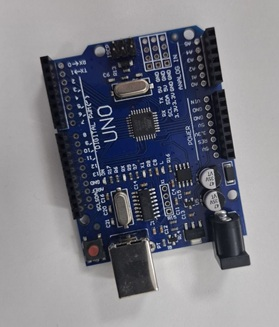
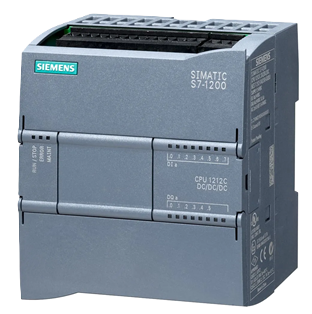
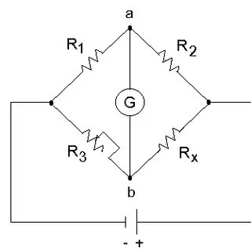
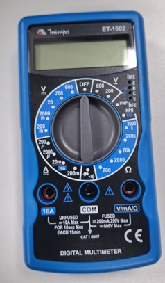
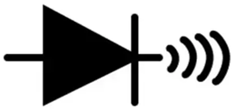
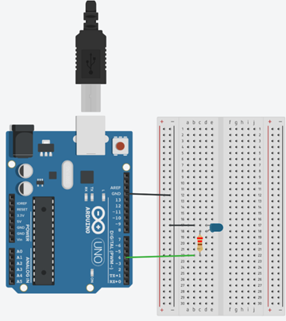
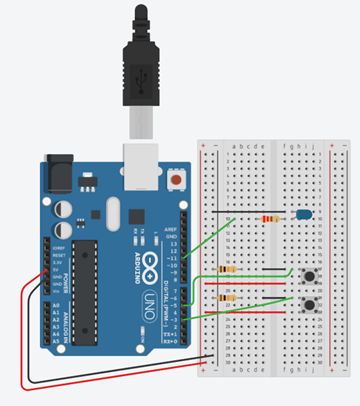

Arduino
Arduino é uma plataforma de hardware e software de código aberto que possibilita o desenvolvimento de projetos eletrônicos. Ele permite que qualquer pessoa crie, monte e modifique seu próprio arduino. O arduino é composto por um microcontrolador Atmel, circuitos, entradas e saídas.

Entrada Analógica
A Entrada analógica é o processo em que o sinal elétrico é enviado, convertido em valor digital que vai
de 0
a 1023, sendo usada em dispositivos que apresentam níveis variados ao invês de 0 e 1.
Volts:
ligado = 5V ; Desligado = ~ 0V.(Variado de 0 a 1023 em valor digital)
Binário:
Ligado = 1 : Desligado = 0.
Físico: Ligado = HIGH; Desligado = LOW.
saída analógica (PWM)
O PWM (Pulse Width Modulation) é uma técnica para simular uma tensão variável usando apenas sinais digitais (ligado/desligado). Ele componentes eletrônicos ligando e desligando a energia muito rápido (cerca de 500 a 1000 vezes por segundo). O valor vai de 0 a 255. Pode usa-lo apenas nos pinos do Arduino com o símbolo ~ (Ex: 3, 5, 6, 9, 10 e 11).
Saída Analógica
Saida analógica é o processo em que o microcontrolador converte um valor digital em um sinal analógico, tensão ou corrente para controlar dispositivos. O Arduino não tem saída analógica real, mas simula uma usando PWM. O PWM liga e desliga o sinal rapidamente, e o valor de 0 a 255 define quanto tempo ele fica ligado em cada ciclo, gerando uma tensão média entre 0V e 5V.
CLP
O CLP (Controlador Lógico Programável) é um equipamento utilizado na automação industrial para controlar máquinas e processos de forma eficiente. A CPU 1214C do tipo DC/DC/DC utiliza alimentação em 24Vcc, com entradas digitais e saídas a transistor também em 24Vcc. O modelo oferece alta velocidade de resposta, sendo ideal para aplicações que exigem precisão, como controle por PWM.

Entrada e Saida analógica do CLP
Entradas analógicas recebem valores variáveis de sensores, como temperatura, pressão ou nível (ex: 0–10 V
ou
4–20 mA) e converte esses sinais em grandezas físicas contínuas.
Saídas analógicas enviam sinais
contínuos para atuadores, como inversores de frequência ou válvulas proporcionais, o que permite
controlar a
intensidade de um dispositivo
Entrada Digital
As entradas digitais do CLP operam com sinais de 24Vcc, identificando apenas dois estados:
ligado
= 1
desligado = 0.
Elas são utilizadas para receber sinais de
dispositivos como botões, sensores e chaves fim de curso. Esse tipo de entrada garante leitura rápida e
confiável para o controle de processos industriais.
Ponte de Wheatstone
A ponte de Wheatstone é um circuito elétrico ligado com 4 resistores utilizado para fazer medição com bastante precisão atráves de pequenas variações de resistência. A variação do sensor é convertida em uma diferença de tensão considerado.

Adaptado de: ResearchGate
Multímetro
O Multímetro é um instrumento de medição utilizado para verificar grandezas elétricas como
-
tensão: Medida em Volts (V).
- corrente: Medida em Ampères (A).
- resistênci: Medida em Ohms (Ω).
Sendo muito usado em manutenção elétrica e
eletrônica para testes e diagnósticos de circuitos.

Medida de Continuidade
O teste de continuidade é um teste usado para verificar se há passagem de corrente elétrica em um circuito, indicando se um fio, componente ou conexão está íntegro (fechado) ou interrompido (aberto), sendo normalmente realizada com um multímetro que emite um som (bip) quando existe continuidade.

Simbolo do teste de continuidade no Multímetro
Exemplo de medição em mili volts do termopar Tipo K
Dimerização
A dimerização é o processo de controlar a intensidade de uma carga elétrica, geralmente iluminação, variando a potência fornecida ao dispositivo, permitindo ajustar o brilho de lâmpadas ou a velocidade de alguns equipamentos, sendo muito utilizada para economia de energia e criação de diferentes níveis de iluminação.
Exemplo de dimerização com o LED a partir de um programa temporizado

Exemplo de dimerização com o LED a partir de comandos enviados por botão
